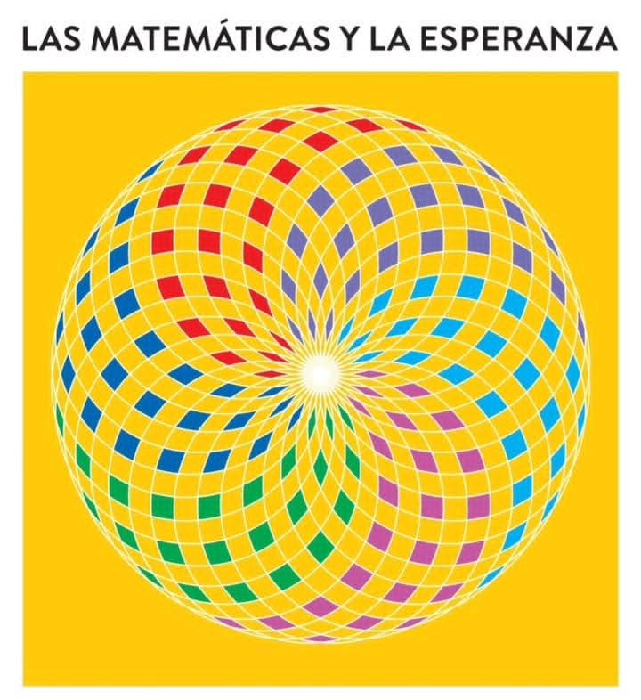
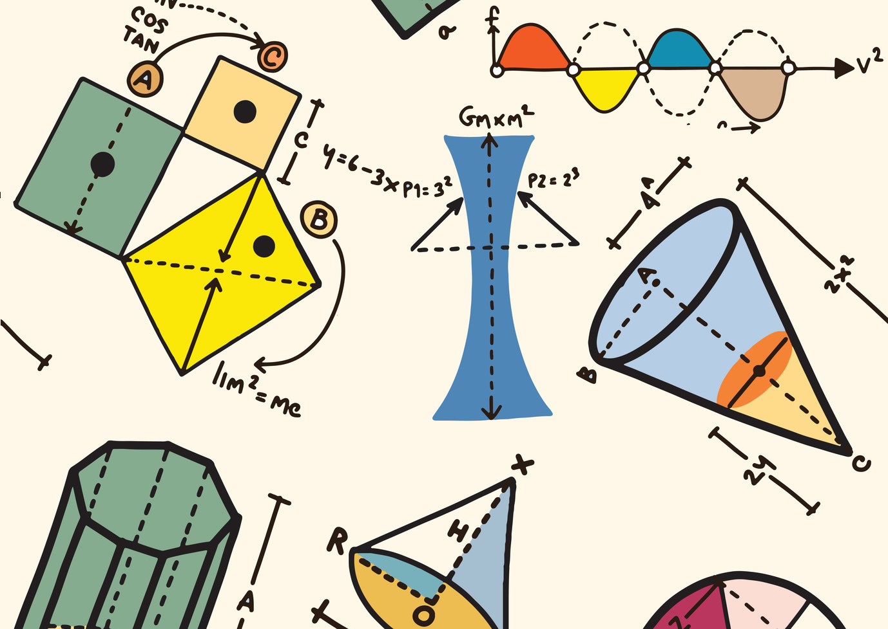
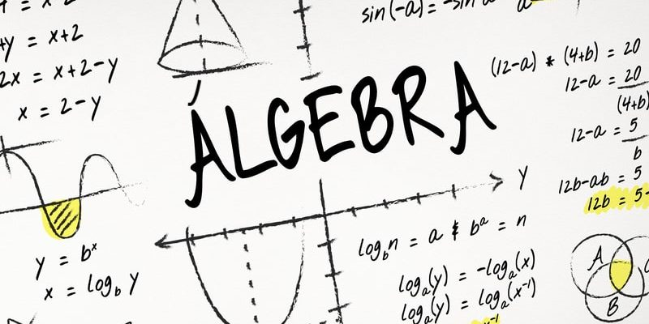
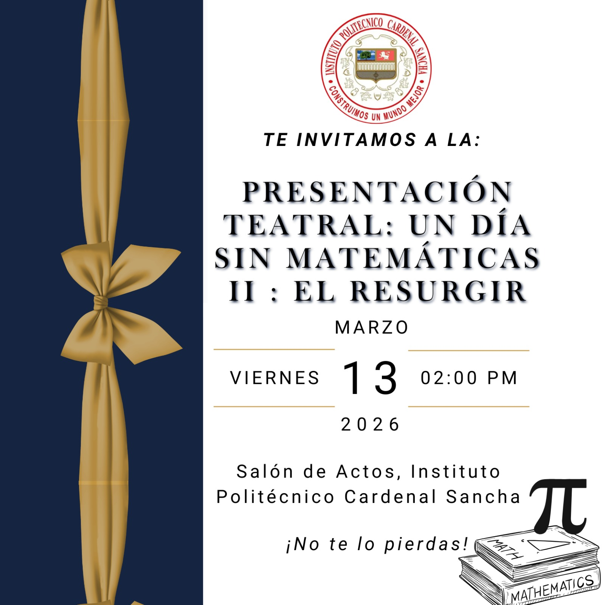

El horario de nuestra semana de matemáticas
Exposición sobre las matemáticas, lenguaje universal y esperanza del futuro.

Los estudiantes presentarán la Geometría y Topología como ramas esenciales de las matemáticas. Explicarán su importancia, sus principios básicos y sus aplicaciones en la vida cotidiana y en diferentes disciplinas.

El silencio revela pistas... ¿Qué descubrimiento haremos hoy?
Las estrellas se alinean... ¿Qué magia ocurrirá en este día?

El final del camino trae revelaciones... ¿Qué secreto será desvelado?
